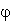
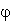
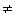
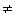

- Введение
- Свидетельства существования темной материи
2.1. Галактические ротационные кривые
2.2. Динамика скоплений галактик
2.3. Космологические свидетельства - Кандидаты на роль темной материи
3.1. Барионная темная материя
3.2. Небарионная темная материя
3.3. Модифицированные теории
I. Введение
Имеются веские аргументы в пользу того, что значительная
часть вещества во Вселенной ничего не излучает и поэтому невидима. О наличии
такой невидимой материи можно узнать по ее гравитационному взаимодействию с
излучающей материей. Исследование скоплений галактик и галактических ротационных
кривых свидетельствует о существовании этой так называемой темной материи. Итак,
по определению темная материя - это материя, которая не взаимодействует с
электромагнитным излучением, то есть не испускает его и не поглощает.
Первое детектирование невидимой материи датируется прошлым
столетием. В 1844 г. Фридрих Бессель в письме к Карлу Гауссу писал, что
необъясненная неравномерность в движении Сириуса может быть результатом его
гравитационного взаимодействия с некоторым соседним телом, причем последнее в
этом случае должно иметь достаточно большую массу. Во времена Бесселя такой
темный компаньон Сириуса был невидимым, его оптически обнаружили лишь в 1862 г.
Им оказался белый карлик, получивший название Сириус-Б, в то время как сам
Сириус был назван Сириус-А.
Плотность вещества во Вселенной  можно оценить из
наблюдений движения отдельных галактик. Обычно
можно оценить из
наблюдений движения отдельных галактик. Обычно  приводится в
единицах так называемой критической плотности
приводится в
единицах так называемой критической плотности  с:
с:
 .
.
В этой формуле G - гравитационная постоянная, H - постоянная Хаббла, которая известна с небольшой точностью (0.4 < H < 1), к тому же, вероятно, зависит от времени:
V = HR - формула Хаббла для скорости расширения Вселенной,
H = 100 h км∙c -1∙Мпс -1.
При  >
>  c Вселенная замкнута, т.е.
гравитационное взаимодействие достаточно сильно для того, чтобы расширение
Вселенной сменилось сжатием.
c Вселенная замкнута, т.е.
гравитационное взаимодействие достаточно сильно для того, чтобы расширение
Вселенной сменилось сжатием.
Таким образом, критическая плотность дается выражением:
 c
= 2∙10 -29
h2 г∙см -3.
c
= 2∙10 -29
h2 г∙см -3.
Космологическая плотность =  /
/ c, определенная на основе динамики
галактических кластеров и суперкластеров, равна 0.1 <
< 0.3.
c, определенная на основе динамики
галактических кластеров и суперкластеров, равна 0.1 <
< 0.3.
Из наблюдения характера удаления крупномасштабных областей
Вселенной с помощью инфракрасного астрономического спутника IRAS получено, что
0.25 < < 2.
С другой стороны, оценка барионной плотности b
по светимости галактик дает значительно меньшую величину: b
< 0.02.
Это рассогласование обычно рассматривается как указание на
существование невидимой материи.
С недавних пор проблеме поиска темной материи стали уделять
очень большое внимание. Если принять во внимание все формы барионной материи,
такие, как межпланетная пыль, коричневые и белые карлики, нейтронные звезды и
черные дыры, то оказывается, что для объяснения всех наблюдаемых явлений
необходима значительная доля небарионной материи. Это утверждение остается в
силе даже после учета современных данных о так называемых MACHO-объектах
(MAssive Compact Halo Objects - массивные компактные галактические объекты),
обнаруженных с помощью эффекта гравитационных линз.
II. Свидетельства существования темной материи
2.1. Галактические ротационные кривые
В случае спиральных галактик скорость вращения отдельных звезд вокруг центра галактики определяется из условия постоянства орбит. Приравнивая центробежную и гравитационную силы:
 ,
,
для скорости вращения имеем:
 ,
,
где Mr - вся масса материи внутри сферы радиуса r. В случае идеальной сферической или цилиндрической симметрии влияние массы, расположенной вне этой сферы, взаимно компенсируется. В первом приближении центральную область галактики можно считать сферической, т.е.
 ,
,
где  - средняя плотность.
- средняя плотность.
Во внутренней части галактики ожидается линейный рост
скорости вращения с увеличением расстояния от центра. Во внешней области
галактики масса Mr практически постоянна и зависимость скорости от
расстояния отвечает случаю с точечной массой в центре галактики:
 .
.
Ротационная скорость v(r) определяется, например, путем
измерения допплеровского сдвига в спектре излучения Hе-II областей вокруг
O-звезд. Поведение экспериментально измеренных ротационных кривых спиральных
галактик не соответствует уменьшению v(r) с ростом радиуса. Исследование 21-см
линии (переход сверхтонкой структуры в атоме водорода), излучаемой межзвездным
веществом, привело к аналогичному результату. Постоянство v(r) при больших
значениях радиуса означает, что масса Mr
также увеличивается с ростом радиуса: Mr ~ r. Это указывает на
присутствие невидимой материи. Звезды движутся быстрее, чем можно было ожидать
на основе видимого количества материи.
На основе этого наблюдения было постулировано существование
сферического гало темной материи, окружающего галактику и ответственного за
неубывающее поведение ротационных кривых. Кроме того, сферическое гало могло бы
способствовать стабильности формы диска галактик и подтверждать гипотезу об
образовании галактик из сферической протогалактики. Модельные вычисления,
выполненные для Млечного Пути, с помощью которых удалось воспроизвести
ротационные кривые, приняв во внимание наличие гало, указывают на то, что
значительная часть массы должна находиться в этом гало. Свидетельства в пользу
существования сферических гало дают также глобулярные кластеры - сферические
скопления звезд, которые представляют собой наиболее древние объекты в галактике
и которые распределены сферически.
Однако недавнее исследование прозрачности галактик бросило
тень сомнения на эту картину. Путем рассмотрения степени затемненности
спиральных галактик как функции угла наклонения можно сделать заключение о
прозрачности таких объектов. Если бы галактика была совершенно прозрачна, то
полная ее светимость не зависела бы от угла, под которым эта галактика
наблюдается, так как все звезды были бы видимы одинаково хорошо (в пренебрежении
размерами звезд). С другой стороны, постоянная поверхностная яркость означает,
что галактика не прозрачна. В этом случае наблюдатель видит всегда только
внешние звезды, т.е. всегда одно и то же их число на единицу поверхности
независимо от угла зрения. Экспериментально было установлено, что поверхностная
яркость остается в среднем постоянной, что могло бы свидетельствовать о
практически полной непрозрачности спиральных галактик. В таком случае
использование оптических методов для определения массовой плотности Вселенной не
совсем точно. Более тщательный анализ результатов измерений привел к заключению
о молекулярных облаках как абсорбирующем материале (их диаметр примерно 50 пс и
температура около 20 К). Согласно закону смещения Вина, такие облака должны
излучать в субмиллиметровой области. Этот результат мог бы дать объяснение
поведения ротационных кривых без предположения о дополнительной экзотической
темной материи.
Свидетельства в пользу существования темной материи были
найдены и в эллиптических галактиках. Газообразные гало с температурами около 107 К
были зарегистрированы по их поглощению рентгеновских лучей. Скорости этих
газовых молекул больше, чем скорость расширения:
vr = (2GM/r)1/2,
если предполагать, что их массы соответствуют светимости. Для эллиптических галактик отношение массы к светимости примерно на два порядка больше, чем у Солнца, которое является характерным примером средней звезды. Такое большое значение обычно связывают с существованием темной материи.
2.2. Динамика скоплений галактик. Динамика скоплений галактик свидетельствует в пользу
существования темной материи. Когда движение системы, потенциальная энергия
которой является однородной функцией координат, происходит в ограниченной
пространственной области, то усредненные по времени значения кинетической и
потенциальной энергии связаны друг с другом теоремой о вириале. Она может быть
использована для оценки плотности вещества в скоплениях большого числа галактик.
Если потенциальная энергия U - однородная функция
радиус-векторов ri
степени k, то U и кинетическая энергия  связаны как 2
связаны как 2 = k
= k .
Так как
.
Так как  +
+  =
=  = E, то отсюда следует, что:
= E, то отсюда следует, что:
 =
2E/(k + 2),
=
2E/(k + 2),  =kE/(k + 2),
=kE/(k + 2),
где E-полная энергия. Для гравитационного взаимодействия (U ~ 1/r) k = -1,
поэтому 2 = -
= - .
Средняя кинетическая энергия скопления N галактик дается выражением:
.
Средняя кинетическая энергия скопления N галактик дается выражением:
 = N<mv2>/2.
= N<mv2>/2.
Эти N галактик могут попарно взаимодействовать друг с другом. Поэтому имеется N(N-1)/2 независимых пар галактик, полная средняя потенциальная энергия которых имеет вид
 = GN(N - 1)
= GN(N - 1) 2/2r.
2/2r.
При N = M и (N-1)
= M и (N-1)  N
для динамической массы получается M
N
для динамической массы получается M  2<r><v2>/ G.
2<r><v2>/ G.
Измерения среднего расстояния <r> и средней скорости <v> дают
значение динамической массы, которое примерно на два порядка превышает массу,
полученную на основе анализа светимости галактик. Данный факт может
интерпретироваться как еще одно свидетельство в пользу существования темной
материи.
Этот аргумент тоже имеет свои слабые места. Вириальное
уравнение справедливо только при усреднении по длительному временному периоду,
когда замкнутые системы находятся в состоянии равновесия. Однако измерения
галактических скоплений представляют собой нечто наподобие мгновенных
фотоснимков. Более того, скопления галактик не являются замкнутыми системами,
они связаны друг с другом. И наконец, не ясно, достигли они состояния равновесия
или нет.
Выше было дано определение критической плотности  с
Формально его можно получить на основе ньютоновской динамики путем вычисления
критической скорости расширения сферической галактики:
с
Формально его можно получить на основе ньютоновской динамики путем вычисления
критической скорости расширения сферической галактики:
 .
.
Соотношение для  с
следует из выражения для Е, если принять, что H = r'/r = v/r.
с
следует из выражения для Е, если принять, что H = r'/r = v/r.
Описание динамики Вселенной основывается на полевых
уравнениях Эйнштейна (Общая Теория Относительности - ОТО). Они несколько
упрощаются в предположении об однородности и изотропности пространства. В
метрике Робертсона-Уолкера инфинитезимальный линейный элемент дается выражением:
 ,
,
где r,  ,  -
сферические координаты точки. Степени свободы этой метрики включены в параметр k
и масштабный множитель R. Величина k принимает только дискретные значения (если
не брать в рассмотрение фрактальную геометрию) и не зависит от времени. Значение
k представляет собой характеристику модели Вселенной (k = -1 - гиперболическая
метрика (открытая Вселенная), k = 0 - евклидова метрика (плоская Вселенная),
k = +1 - сферическая метрика (замкнутая Вселенная)).
,  -
сферические координаты точки. Степени свободы этой метрики включены в параметр k
и масштабный множитель R. Величина k принимает только дискретные значения (если
не брать в рассмотрение фрактальную геометрию) и не зависит от времени. Значение
k представляет собой характеристику модели Вселенной (k = -1 - гиперболическая
метрика (открытая Вселенная), k = 0 - евклидова метрика (плоская Вселенная),
k = +1 - сферическая метрика (замкнутая Вселенная)).
Динамика Вселенной полностью задается масштабной функцией
R(t) (расстояние между двумя соседними точками пространства с координатами r,  , меняется со временем как R(t)). В случае
сферической метрики R(t) представляет собой радиус Вселенной. Эта масштабная
функция удовлетворяет уравнениям Эйнштейна-Фридмана-Леметра:
, меняется со временем как R(t)). В случае
сферической метрики R(t) представляет собой радиус Вселенной. Эта масштабная
функция удовлетворяет уравнениям Эйнштейна-Фридмана-Леметра:
 ,
,
 ,
,
где p(t) - полное давление, а  - космологическая постоянная, которая в
рамках современных квантово-полевых теорий интерпретируется как плотность
энергии вакуума. Далее предположим, что
- космологическая постоянная, которая в
рамках современных квантово-полевых теорий интерпретируется как плотность
энергии вакуума. Далее предположим, что  = 0, как это часто делается для объяснения
опытных фактов без введения темной материи. Коэффициент R0'/R0
определяет постоянную Хаббла H0, где индексом "0" отмечены
современные значения соответствующих величин. Из вышеприведенных формул следует,
что для параметра кривизны k = 0 современная критическая плотность Вселенной
дается выражением, чья величина представляет собой границу между открытой и
замкнутой Вселенной (это значение как бы отделяет сценарий, в котором Вселенная
вечно расширяется, от того сценария, когда Вселенную ожидает коллапс в конце
фазы временного расширения):
= 0, как это часто делается для объяснения
опытных фактов без введения темной материи. Коэффициент R0'/R0
определяет постоянную Хаббла H0, где индексом "0" отмечены
современные значения соответствующих величин. Из вышеприведенных формул следует,
что для параметра кривизны k = 0 современная критическая плотность Вселенной
дается выражением, чья величина представляет собой границу между открытой и
замкнутой Вселенной (это значение как бы отделяет сценарий, в котором Вселенная
вечно расширяется, от того сценария, когда Вселенную ожидает коллапс в конце
фазы временного расширения):
 .
.
Часто используется параметр плотности
 .
.
где q0 - параметр торможения: q(t) = -R(t)R''(t)/(R'(t))2.
Тем самым возможны три случая:
0 <
1 - открытая Вселенная,
0 = 1
- плоская Вселенная,
0 >
1 - замкнутая Вселенная.
Измерения параметра плотности дали оценку: 0  0.2, на основании которой
следовало ожидать открытый характер Вселенной. Однако ряд теоретических
представлений трудно согласовать с открытостью Вселенной, например, так
называемую проблему "плоскостности" и генезис галактик.
0.2, на основании которой
следовало ожидать открытый характер Вселенной. Однако ряд теоретических
представлений трудно согласовать с открытостью Вселенной, например, так
называемую проблему "плоскостности" и генезис галактик.
Проблема плоскостности
Как видно, плотность Вселенной очень близка к критической.
Из уравнений Эйнштейна-Фридмана-Леметра следует (при  = 0), что
= 0), что
 .
.
Поскольку плотность  (t)
пропорциональна 1/R(t)3, то с помощью выражения для 0
(k не равно 0) имеем:
(t)
пропорциональна 1/R(t)3, то с помощью выражения для 0
(k не равно 0) имеем:
 .
.
Таким образом, значение  1 очень нестабильно. Любое отклонение от совершенно плоского случая сильно
увеличивается по мере расширения Вселенной. Это означает, что во время
первоначального ядерного синтеза Вселенная должна была быть значительно более
плоской, чем теперь.
1 очень нестабильно. Любое отклонение от совершенно плоского случая сильно
увеличивается по мере расширения Вселенной. Это означает, что во время
первоначального ядерного синтеза Вселенная должна была быть значительно более
плоской, чем теперь.
Одно из возможных решений этой проблемы дается в инфляционных
моделях. Предполагается, что расширение ранней Вселенной (в интервале между 10
-34 с и 10 -31 с после Большого Взрыва) происходило
экспоненциально в фазе инфляции. В этих моделях параметр плотности обычно не
зависит от времени
( = 1).
Однако имеются теоретические указания на то, что значение параметра плотности в
интервале
0.01< 0
< 2 также согласуется с моделью инфляции.
Генезис галактик
Для генезиса галактик необходимы неоднородности плотности.
Галактики должны были возникать в таких пространственных областях, где плотности
были больше, чем вокруг, так что в результате гравитационного взаимодействия эти
области успевали кластеризоваться быстрее, чем наступало их разрежение за счет
всеобщего расширения.
Однако такого типа аккумулирование материи могло начаться
только после формирования атомов из ядер и электронов, т.е. примерно через 150
000 лет после Большого Взрыва при температурах около 3000 К (так как на ранних
этапах вещество и излучение находились в состоянии динамического равновесия:
любой образующийся сгусток материи тут же разрушался под воздействием излучения
и в то же время излучение не могло вырваться за пределы материи). Заметные
флуктуации плотности обычной материи в то время были исключены вплоть до очень
низкого уровня изотропностью фонового излучения. После стадии формирования
нейтральных атомов излучение перестает находиться в состоянии термического
равновесия с материей, тем самым возникающие после этого флуктуации плотности
материи не находят более своего отражения в характере излучения.
Но если провести вычисления эволюции во времени процесса
сжатия материи, который как раз тогда и начался, то оказывается, что прошедшего
с тех пор времени недостаточно для того, чтобы могли успеть образоваться такие
крупные структуры, как галактики или их скопления. По-видимому, необходимо
потребовать существования массивных частиц, вышедших из состояния термического
равновесия на более ранней стадии, так чтобы эти частицы имели возможность
проявить себя как некоторые зародыши для конденсации вокруг них обычной материи.
Такими кандидатами могут быть так называемые WIMP-частицы. При этом необходимо
учитывать требование изотропности фонового космического излучения. Небольшая
анизотропия (10-4) в реликтовом излучении (температура около 2.7 К)
была обнаружена лишь недавно с помощью спутника COBE.
3.1. Барионная темная материя
Наиболее очевидным кандидатом на роль темной материи может
быть обычная барионная материя, которая не излучает и имеет соответствующую
распространенность. Одну из возможностей мог бы реализовать межзвездный или
межгалактический газ. Однако в этом случае должны возникать характерные линии
излучения или поглощения, которые не обнаружены.
Другим кандидатом могут быть коричневые карлики - космические
тела с массами значительно меньше, чем масса Солнца (M < 0.08Mсолнца).
Гравитационного давления внутри этих объектов оказывается недостаточно для
создания температур, при которых начинает процесс слияния протонов в гелий.
Из-за отсутствия ядерного синтеза излучение коричневых карликов очень слабо,
если не считать излучения тех из них, которые находятся на ранней стадии своего
развития. Планеты также могли бы входить в эту группу. Однако из-за отсутствия
знания о происхождении звезд и планет, а также из-за ограниченности
фотометрической детектируемости небесных тел расстоянием в несколько световых
лет особенно сложно оценить число таких объектов.
Очень компактные объекты, находящиеся на конечных стадиях
развития звезд (белые карлики, нейтронные звезды и черные дыры), также могли бы
входить в состав темной материи. Поскольку в течение своего времени жизни
практически каждая звезда достигает одной из этих трех конечных стадий, то
значительная часть массы более ранних и более тяжелых звезд должна
присутствовать в неизлучающей форме в виде белых карликов, нейтронных звезд или
черных дыр. Часть этого вещества возвращается в межзвездное пространство путем
вспышек сверхновых или другими путями и принимает участие в образовании новых
звезд. При этом не следует принимать во внимание звезды с массами M < 0.9Mсолнца,
так как их время жизни больше, чем возраст Вселенной, и они еще не достигли
конечных стадий в своем развитии.
Верхние границы на возможную плотность барионной материи во
Вселенной можно получить из данных о первоначальном ядерном синтезе, который
начался примерно через 3 минуты после Большого Взрыва. Особенно важны измерения
современной распространенности дейтерия - (D/H)0
 10-5, так
как во время первоначального ядерного синтеза шло образование главным образом
именно дейтерия. Хотя дейтерий также появился позднее в качестве промежуточного
продукта реакций слияния ядер, тем не менее полное количество дейтерия за счет
этого сильно не возросло. Анализ процессов, происходящих на стадии раннего
ядерного синтеза, дает верхнюю границу - o,b < 0.1-0.2
для плотности возможной барионной материи во Вселенной. При этом учтена вся
материя, которая была сформирована во время ядерного синтеза в ранней Вселенной.
Данное значение хорошо согласуется с оценками, полученными из рассмотрения
характера вращения галактик.
10-5, так
как во время первоначального ядерного синтеза шло образование главным образом
именно дейтерия. Хотя дейтерий также появился позднее в качестве промежуточного
продукта реакций слияния ядер, тем не менее полное количество дейтерия за счет
этого сильно не возросло. Анализ процессов, происходящих на стадии раннего
ядерного синтеза, дает верхнюю границу - o,b < 0.1-0.2
для плотности возможной барионной материи во Вселенной. При этом учтена вся
материя, которая была сформирована во время ядерного синтеза в ранней Вселенной.
Данное значение хорошо согласуется с оценками, полученными из рассмотрения
характера вращения галактик.
С другой стороны, сейчас совершенно ясно, что барионная
материя сама по себе не в состоянии удовлетворить требованию = 1, которое
следует из инфляционных моделей. Кроме того, остается неразрешенной проблема
образования галактик. Все это приводит к необходимости существования небарионной
темной материи, особенно в том случае, когда требуется удовлетворение условия = 1 при
нулевой космологической постоянной.
Теоретические модели предоставляют большой выбор возможных кандидатов на роль небарионной темной материи, в том числе: легкие и тяжелые нейтрино, суперсимметричные частицы SUSY-моделей, аксионы, космионы, магнитные монополи, частицы Хиггса - они сведены в таблице. Также в таблице присутствуют теории, объясняющие опытные данные без введения темной материи (зависящая от времени гравитационная постоянная в неньютоновой гравитации и космологическая постоянная). Обозначения: DM - темная материя, GUT - теория Великого Объединения, SUSY - суперсимметричные теории, SUGRA - супергравитация, QCD - квантовая хромодинамика, QED - квантовая электродинамика, ОТО - общая теория относительности. Понятие WIMP (слабовзаимодействующие массивные частицы) используется для обозначения частиц с массой больше нескольких ГэВ/c2, которые принимают участие только в слабом взаимодействии. С учетом новых измерений реликтового излучения со спутника COBE и красного смещения с помощью спутника IRAS недавно было заново проведено исследование распределения галактик на больших расстояниях и образования структур большого масштаба в нашей галактике. На основе анализа различных моделей формирования структур было сделано заключение, что возможна только одна удовлетворительная модель Вселенной с = 1, в которой темная материя имеет смешанный характер: 70% существует в форме холодной темной материи и 30% в форме горячей темной материи, причем последняя состоит из двух безмассовых нейтрино и одного нейтрино с массой 7.2 + 2 эВ. Это означает возрождение ранее отброшенной модели смешанной темной материи.
Легкие нейтрино
В отличие от всех остальных кандидатов на роль темной
материи, нейтрино обладают явным преимуществом: известно, что они существуют.
Примерно известна их распространенность во Вселенной. Для того, чтобы нейтрино
могли быть кандидатами на роль темной материи, они, несомненно, должны обладать
массой. Для достижения критической плотности Вселенной массы нейтрино должны
лежать в области нескольких ГэВ/c2 или в области от 10 до 100 эВ/c2.
В качестве таких кандидатов возможны и тяжелые нейтрино, так
как космологически значимое произведение  exp
(-
exp
(- /kTf)
становится малым и для больших масс. Здесь Tf - температура, при
которой тяжелые нейтрино перестают находиться в состоянии термического
равновесия. Этот больцмановский множитель дает распространенность нейтрино с
массой
/kTf)
становится малым и для больших масс. Здесь Tf - температура, при
которой тяжелые нейтрино перестают находиться в состоянии термического
равновесия. Этот больцмановский множитель дает распространенность нейтрино с
массой  по отношению к распространенности
безмассовых нейтрино.
по отношению к распространенности
безмассовых нейтрино.
| Частица | Масса | Теория | Проявление |
| G( R ) | - | Неньютонова гравитация | Прозрачная DM на больших масштабах |
| - | ОТО | =1 без DM | |
| Аксион, майорон, голдстоун. бозон | 10-5 эВ | QCD; нарушение сим. Печеи-Куина | Холодная DM |
| Обычное нейтрино | 10-100 эВ | GUT | Горячая DM |
| Легкое хиггсино, фотино, гравитино, аксино, снейтрино | 10-100 эВ | SUSY/DM | |
| Парафотон | 20-400 эВ | Модифиц. QED | Горячая, теплая DM |
| Правые нейтрино | 500 эВ | Суперслабое взаимодействие | Теплая DM |
| Гравитино и т.д. | 500 эВ | SUSY/SUGRA | Теплая DM |
| Фотино, гравитино, аксион, зеркал. частицы, нейтрино Симпсона | кэВ | SUSY/SUGRA | Теплая/холодная DM |
| Фотино, снейтрино, хиггсино, глюино, тяжелое нейтрино | МэВ | SUSY/SUGRA | Холодная DM |
| Теневая материя | МэВ | SUSY/SUGRA | Горячая/холодная (как барионы) DM |
| Преон | 20-200 ТэВ | Составные модели | Холодная DM |
| Монополи | 1016 ГэВ | GUT | Холодная DM |
| Пиргон, максимон, полюс Перри, newtorite, Шварцшильд | 1019 ГэВ | Теории высших размерностей | Холодная DM |
| Суперструны | 1019 ГэВ | SUSY/SUGRA | Холодная DM |
| Кварковые "самородки" | 1015 г | QCD, GUT | Холодная DM |
| Косм. струны, доменные стенки | (108-1010)Mсолнца | GUT | Формирование галактик, могут не давать большого вклада в |
| Космион | 4-11 ГэВ | Проблема нейтрино | Формирование потока нейтрино на Солнце |
| Черные дыры | 1015-1030 г | ОТО | Холодная DM |
Для каждого типа нейтрино во Вселенной нейтринная
плотность связана с фотонной плотностью соотношением  = (3/11)
= (3/11) .
Строго говоря, это выражение справедливо только для легких майорановских
нейтрино (для дираковских нейтрино при определенных обстоятельствах необходимо
ввести еще один статистический множитель, равный двум). Плотность фотонов может
быть определена на основе фонового реликтового 3 К излучения и достигает
.
Строго говоря, это выражение справедливо только для легких майорановских
нейтрино (для дираковских нейтрино при определенных обстоятельствах необходимо
ввести еще один статистический множитель, равный двум). Плотность фотонов может
быть определена на основе фонового реликтового 3 К излучения и достигает 
 400 см -3.
400 см -3.
Оказывается, что массовая плотность нейтрино получается
близкой к критической, если выполняется условие:
 .
.
где  -
статистический фактор, учитывающий число различных состояний спиральности для
каждого типа нейтрино. Для майорановских нейтрино этот множитель равен 2. Для
дираковских нейтрино он должен быть равен 4. Однако обычно считается, что правые
компоненты покинули состояние термического равновесия значительно раньше,
поэтому можно также считать, что
-
статистический фактор, учитывающий число различных состояний спиральности для
каждого типа нейтрино. Для майорановских нейтрино этот множитель равен 2. Для
дираковских нейтрино он должен быть равен 4. Однако обычно считается, что правые
компоненты покинули состояние термического равновесия значительно раньше,
поэтому можно также считать, что  = 2 и для дираковского случая.
= 2 и для дираковского случая.
Поскольку нейтринная плотность имеет тот же порядок величины,
что и плотность фотонов, то существует примерно в 109 раз больше
нейтрино, чем барионов, таким образом, даже малая масса нейтрино могла бы
определять динамику Вселенной. Для достижения =  /
/ c = 1 необходимы нейтринные массы
c = 1 необходимы нейтринные массы  c2
c2  15-65 эВ/
15-65 эВ/ , где
, где  - число типов легких нейтрино. Экспериментальные верхние границы для масс трех
известных типов нейтрино таковы: m(
- число типов легких нейтрино. Экспериментальные верхние границы для масс трех
известных типов нейтрино таковы: m( e)
< 7.2 эВ/c2,
e)
< 7.2 эВ/c2,
m(νμ) < 250 кэВ/c2, m(ντ) < 31 МэВ/c2.
Таким образом, электронное нейтрино практически исключается в качестве кандидата
на доминирующую фракцию темной материи. Экспериментальные данные для остальных
двух типов нейтрино не столь критичны, так что мюонные и тау-нейтрино остаются
среди возможных кандидатов. Нейтрино вышли из состояния термического равновесия
примерно через 1 с после Большого Взрыва при температуре 1010 К (что
отвечает энергии 1 МэВ). В это время они обладают релятивистскими энергиями и
тем самым считаются частицами горячей темной материи. Нейтрино также могут
давать вклад в процесс формирования галактик. В расширяющейся Вселенной, в
которой доминируют частицы массой mi
, согласно критерию Джинса, та масса, которая может коллапсировать за счет
гравитационных сил, равна:
 .
.
Во Вселенной, где доминируют нейтрино, необходимая степень сжатия могла установиться на относительно поздней стадии, первые структуры соответствовали бы суперскоплениям галактик. Таким образом, скопления галактик и галактики могли бы развиваться путем фрагментации этих первичных структур (top-down модель). Однако при таком подходе возникают проблемы при рассмотрении образования очень малых структур, таких как карликовые галактики. Для объяснения образования довольно массивных сжатий также требуется принять во внимание принцип Паули для фермионов.
Тяжелые нейтрино
Согласно данным LEP и SLAC, относящимся к прецизионному
измерению ширины распада Z0 - бозона, существует только три типа
легких нейтрино и исключается существование тяжелых нейтрино вплоть до значений
масс 45 Гэ/c2.
Когда нейтрино с такими большими массами покинули состояние
термического равновесия, они уже имели нерелятивистские скорости, поэтому их
называют частицами холодной темной материи. Присутствие тяжелых нейтрино могло
привести к раннему гравитационному сжатию материи. В этом случае сначала
образовались бы более мелкие структуры. Скопления и суперскопления галактик
сформировались бы позднее путем аккумулирования отдельных групп галактик
(bottom-up модель).
Аксионы.
Аксионы - это гипотетические частицы, которые возникают в
связи с проблемой CP-нарушения в сильном взаимодействии ( - проблема).
Существование такой псевдоскалярной частицы обусловлено нарушением киральной
симметрии Печеи-Куина. Масса аксиона дается выражением:
- проблема).
Существование такой псевдоскалярной частицы обусловлено нарушением киральной
симметрии Печеи-Куина. Масса аксиона дается выражением:
 .
.
Взаимодействие с фермионами и калибровочными бозонами описывается соответственно следующими константами связи:
 ,
, .
.
Постоянная распада аксиона fa
определяется вакуумным средним поля Хиггса. Так как fa - свободная
константа, которая может принимать любые значения между электрослабым и
планковским масштабами, то возможные значения масс аксиона варьируются на 18
порядков. Различаются DFSZ-аксионы, непосредственно взаимодействующие с
электронами, и так называемые адронные аксионы, которые взаимодействуют с
электронами только в первом порядке теории возмущений. Обычно считается, что
аксионы составляют холодную темную материю. Для того, чтобы их плотность не
превышала критическую, необходимо иметь fa < 1012
ГэВ. Стандартный аксион Печеи-Куина с fa  250 ГэВ уже исключен
экспериментально, другие варианты с меньшими массами и, соответственно, большими
параметрами связи также значительно ограничены разнообразными данными, в первую
очередь астрофизическими.
250 ГэВ уже исключен
экспериментально, другие варианты с меньшими массами и, соответственно, большими
параметрами связи также значительно ограничены разнообразными данными, в первую
очередь астрофизическими.
Суперсимметричные частицы
Большинство суперсимметричных теорий содержит одну
стабильную частицу, которая является новым кандидатом на роль темной материи.
Существование стабильной суперсимметричной частицы следует из сохранения
мультипликативного квантового числа - так называемой R-четности, которое
принимает значение +1 для обычных частиц, и -1 для их суперпартнеров. Это есть
закон сохранения R-четности. Согласно этому закону сохранения
SUSY-частицы могут образовываться только парами. SUSY-частицы могут распадаться
только на нечетное число SUSY-частиц. Следовательно, легчайшая суперсимметричная
частица должна быть стабильной.
Имеется возможность нарушить закон сохранения R-четности.
Квантовое число R связано с барионным числом B и лептонным числом L соотношением
R = (-1)3B+L+2S, где S-спин частицы. Другими словами, нарушение B
и/или L может приводить к несохранению R-четности. Однако существуют очень
жесткие границы для возможности нарушения R-четности.
Предполагается, что легчайшая суперсимметричная частица (LSP)
не принимает участия ни в электромагнитном, но в сильном взаимодействии. В
противном случае она соединялась бы с обычной материей и проявлялась бы в
настоящее время в качестве необычной тяжелой частицы. Тогда распространенность
такой LSP, нормированная на распространенность протона, получилась бы равной 10-10
для сильного взаимодействия, и 10 -6 для электромагнитного. Эти
значения противоречат экспериментальным верхним границам: n(LSP)/n(p) < 10-15
- 10-30. Приведенные оценки зависят от масс и в данном случае
отвечают области масс 1 ГэВ < mLSPc2
< 107 ГэВ. Поэтому был сделан вывод о том, что легчайшая
SUSY-частица, помимо гравитационного взаимодействия, принимает участие только в
слабом.
Среди возможных кандидатов на роль нейтральной легчайшей
суперсимметричной частицы имеются фотино (S = 1/2) и зино (S = 1/2), которые
обычно называют гейджино, а также хиггсино (S = 1/2), снейтрино (S = 0) и
гравитино (S = 3/2). В большинстве теорий LSP-частица представляет собой
линейную комбинацию упомянутых выше SUSY-частиц со спином 1/2. Масса этого так
называемого нейтралино, скорее всего, должна быть больше 10 ГэВ/c2.
Рассмотрение SUSY-частиц в качестве темной материи представляет особый интерес,
так как они появились совершенно в другом контексте и не были специально введены
для разрешения проблемы (небарионной) темной материи.
Космионы
Космионы первоначально были введены для решения проблемы солнечных нейтрино. Благодаря своей большой скорости эти частицы проходят через поверхность звезды практически беспрепятственно.. В центральной области звезды они сталкиваются с ядрами. Если потеря энергии достаточно велика, то они не могут опять покинуть эту звезду и накапливаются в ней с течением времени. Внутри Солнца захваченные космионы влияют на характер передачи энергии и тем самым дают вклад в охлаждение центральной области Солнца. Это привело бы к меньшей вероятности образования нейтрино от 8В и объяснило бы, почему поток нейтрино, измеряемый на Земле, оказывается меньше, чем ожидаемый. Для разрешения этой нейтринной проблемы масса космиона должна лежать в интервале от 4 до 11 ГэВ/c2 и сечение реакции взаимодействия космионов с материей должно иметь значение 10-36 см2. Однако экспериментальные данные, по-видимому, исключают такое решение проблемы солнечных нейтрино.
Топологические дефекты пространства-времени
Кроме вышеуказанных частиц, топологические дефекты также
могут вносить свой вклад в темную материю. Предполагается, что в ранней
Вселенной при t  10
-36
c, E
10
-36
c, E  1015
ГэВ, Т
1015
ГэВ, Т  10 28 К
произошло нарушение GUT-симметрии, которое привело к разъединению
взаимодействий, описываемых группами SU(3) и SU(2)xU(1). Хиггсовское поле
размерностью 24 приобрело определенную выстроенность, причем ориентация фазовых
углов спонтанного нарушения симметрии осталась произвольной. Как следствие этого
фазового перехода должны были образоваться пространственные области с различной
ориентацией. Эти области со временем увеличивались и в конце концов вошли в
соприкосновение друг с другом.
10 28 К
произошло нарушение GUT-симметрии, которое привело к разъединению
взаимодействий, описываемых группами SU(3) и SU(2)xU(1). Хиггсовское поле
размерностью 24 приобрело определенную выстроенность, причем ориентация фазовых
углов спонтанного нарушения симметрии осталась произвольной. Как следствие этого
фазового перехода должны были образоваться пространственные области с различной
ориентацией. Эти области со временем увеличивались и в конце концов вошли в
соприкосновение друг с другом.
Согласно современным представлениям топологически стабильные
точки дефектов образовались на граничных поверхностях, где произошла встреча
областей с различной ориентацией. Они могли иметь размерность от нуля до трех и
состоять из вакуума ненарушенной симметрии. После нарушения симметрии этот
первоначальный вакуум имеет очень большую энергию и плотность вещества.
Наиболее важными являются точечноподобные дефекты. Они должны
нести изолированный магнитный заряд, т.е. быть магнитными монополями. Их масса
связана с температурой фазового перехода и составляет около 1016
ГэВ/c2. До сих пор, несмотря на интенсивные поиски, существование
таких объектов не зарегистрировано.
Аналогично магнитным монополям могут образовываться и
линейные дефекты - космические струны. Эти нитеобразные объекты обладают
характерной линейной массовой плотностью порядка 1022 г*см -1
и могут быть как замкнутыми, так и незамкнутыми. За счет гравитационного
притяжения они могли служить зародышами для конденсации вещества, в результате
которой образовались галактики.
Большие значения масс позволили бы детектировать такие струны
посредством эффекта гравитационных линз. Струны искривляли бы окружающее
пространство таким образом, что создавалось бы двойное изображение находящихся
за ними объектов. Свет от очень далеких галактик мог бы отклоняться этой струной
согласно законам общей теории гравитации. Наблюдатель на Земле увидел бы два
смежных зеркальных изображения галактик с идентичным спектральным составом. Этот
эффект гравитационных линз уже был обнаружен для удаленных квазаров, когда
галактика, находящаяся между квазаром и Землей, служила в качестве
гравитационной линзы.
Обсуждается также возможность наличия сверхпроводящего
состояния в космических струнах. Электрически заряженные частицы, такие, как
электроны, в симметричном вакууме струны были бы безмассовыми, потому что они
приобретают свои массы только в результате нарушения симметрии благодаря
механизму Хиггса. Таким образом, пары частица-античастица, двигающиеся со
скоростью света, могут создаваться здесь при очень малых затратах энергии. В
результате возникает сверхпроводящий ток. Сверхпроводящие струны могли бы
переходить в возбужденное состояние посредством взаимодействия с заряженными
частицами, снятие этого возбуждения осуществлялось бы путем испускания
радиоволн.
Рассматриваются также дефекты более высокой размерности,
включая двухмерные "доменные стенки" и, в частности, трехмерные дефекты или
"текстуры".
Другие экзотические кандидаты.
- Теневая материя. В предположении, что струны - это одномерные протяженные объекты, в суперструнных теориях предпринимаются попытки повторить успех суперсимметричных моделей в устранении расходимостей также в гравитации и проникнуть в энергетические области за массой Планка. С математической точки зрения свободные от аномалий суперструнные теории могут быть получены только для калибровочных групп SO(32) и E8*E8'. Последняя расщепляется на два сектора, один из которых описывает обычную материю, тогда как другой соответствует теневой материи (E8'). Эти два сектора могут взаимодействовать друг с другом только гравитационно.
- "Кварковые самородки" были предложены в 1984 г. Это стабильные макроскопические объекты из кварковой материи, состоящие из u-, d- и s-кварков. Плотности этих объектов лежат в области ядерной плотности 1015 г/см3, а массы могут составлять от нескольких ГэВ/c2 до значений масс нейтронных звезд. Они образуются при гипотетическом фазовом QCD-переходе, однако обычно считаются очень маловероятными.
Первоначально космологическая постоянная  была введена Эйнштейном в полевые уравнения ОТО для обеспечения, согласно
воззрениям того времени, стационарности Вселенной. Однако после открытия Хабблом
в конце 20-х годов нашего столетия расширения Вселенной она оказалась излишней.
Посему стали считать, что
была введена Эйнштейном в полевые уравнения ОТО для обеспечения, согласно
воззрениям того времени, стационарности Вселенной. Однако после открытия Хабблом
в конце 20-х годов нашего столетия расширения Вселенной она оказалась излишней.
Посему стали считать, что  = 0. Однако в рамках современных теорий
поля эта космологическая постоянная интерпретируется как плотность энергии
вакуума
= 0. Однако в рамках современных теорий
поля эта космологическая постоянная интерпретируется как плотность энергии
вакуума  v. Имеет
место следующее уравнение:
v. Имеет
место следующее уравнение:
 .
.
Случай  = 0
отвечает предположению, что вакуум не дает вклада в плотность энергии. Эта
картина отвечает идеям классической физики. В квантовой же теории поля вакуум
содержит различные квантовые поля, находящиеся в состоянии с наименьшей
энергией, которая вовсе не обязательно равна нулю.
= 0
отвечает предположению, что вакуум не дает вклада в плотность энергии. Эта
картина отвечает идеям классической физики. В квантовой же теории поля вакуум
содержит различные квантовые поля, находящиеся в состоянии с наименьшей
энергией, которая вовсе не обязательно равна нулю.
Принимая во внимание ненулевую космологическую постоянную, с
помощью соотношений
 ,
, 
получаем меньшую критическую плотность и большее значение параметра
плотности, чем ожидалось согласно формулам, приведенным выше. Астрономические
наблюдения, основанные на подсчетах числа галактик, для современной
космологической постоянной дают верхнюю границу
 < 3*10
-56 см -2. Поскольку критическая плотность
< 3*10
-56 см -2. Поскольку критическая плотность  с0 не
может быть отрицательной, легко оценить верхнюю границу
с0 не
может быть отрицательной, легко оценить верхнюю границу
 ,
,
где для H0,max использовано значение 100 км*с-1*Мпс-1.
В то время как ненулевая космологическая постоянная оказалась необходимой для
интерпретации ранней фазы эволюции, некоторые ученые пришли к выводу, что  , не равная 0, могла бы играть роль и на
последующих стадиях развития Вселенной.
, не равная 0, могла бы играть роль и на
последующих стадиях развития Вселенной.
Космологическая постоянная величины

могла бы приводить к значению ( = 0), хотя на самом деле (
= 0), хотя на самом деле (  0). Параметр (
 0). Параметр ( = 0), определенный из
= 0), определенный из  0,
обеспечивал бы
= 1, как это требуется в инфляционных моделях, при условии, что космологическая
постоянная равна
0,
обеспечивал бы
= 1, как это требуется в инфляционных моделях, при условии, что космологическая
постоянная равна
 .
.
Использование численных значений H0 = 75 + 25 км*с
-1*Мпс -1 и 0,obs = 0.2 + 0.1 приводит
к
 =
(1.6 + 1.1)*10
-56 см -2. Плотность энергии вакуума, соответствующая этому
значению, могла бы разрешить противоречие между наблюдаемым значением параметра
плотности и требуемым современными теориями значением = 1.
=
(1.6 + 1.1)*10
-56 см -2. Плотность энергии вакуума, соответствующая этому
значению, могла бы разрешить противоречие между наблюдаемым значением параметра
плотности и требуемым современными теориями значением = 1.
Помимо введения ненулевой космологической постоянной, имеются
другие модели, которые снимают по крайней мере часть проблем без привлечения
гипотезы темной материи.
Теория MOND (МОдифицированная Ньютоновская Динамика)
В этой теории предполагается, что закон гравитации отличается от обычной ньютоновской формы и выглядит следующим образом:
 .
.
В этом случае сила притяжения будет больше и должна быть компенсирована более быстрым периодическим движением, которое в состоянии объяснить плоское поведение ротационных кривых.
Гравитационная постоянная, зависящая от времени.
Зависимость от времени гравитационной постоянной G(t) могла иметь большое значение для процесса формирования галактик. Однако до сих пор прецизионные измерения не дали никаких указаний на временную вариацию G.
Литература
- Г.В. Клапдор-Клайнгротхаус, А. Штаудт."Неускорительная физика элементарных частиц".
- C. Нараньян. "Общая астрофизика и космология".
- Bottino A. et al., 1994, Astropart. Phys., 2, 67, 77.